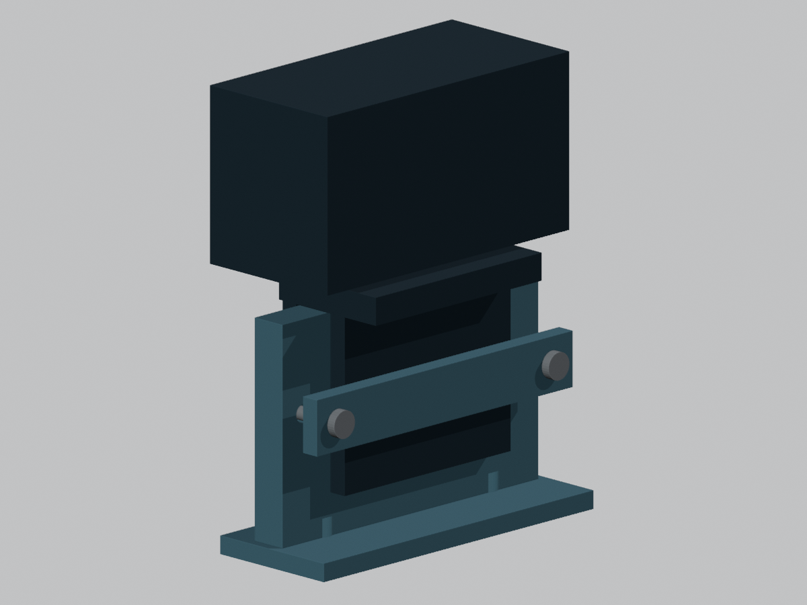
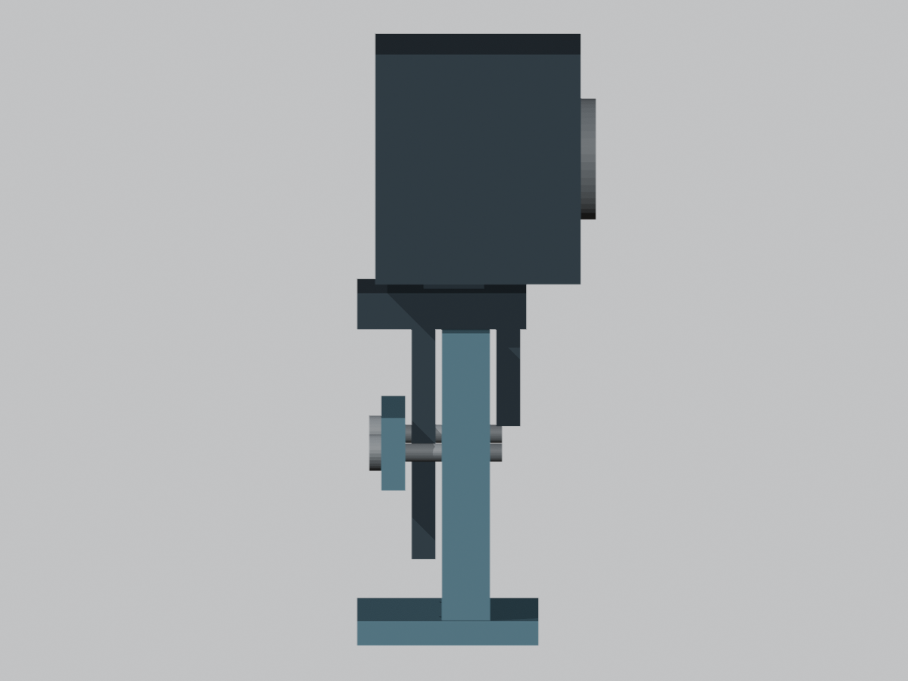
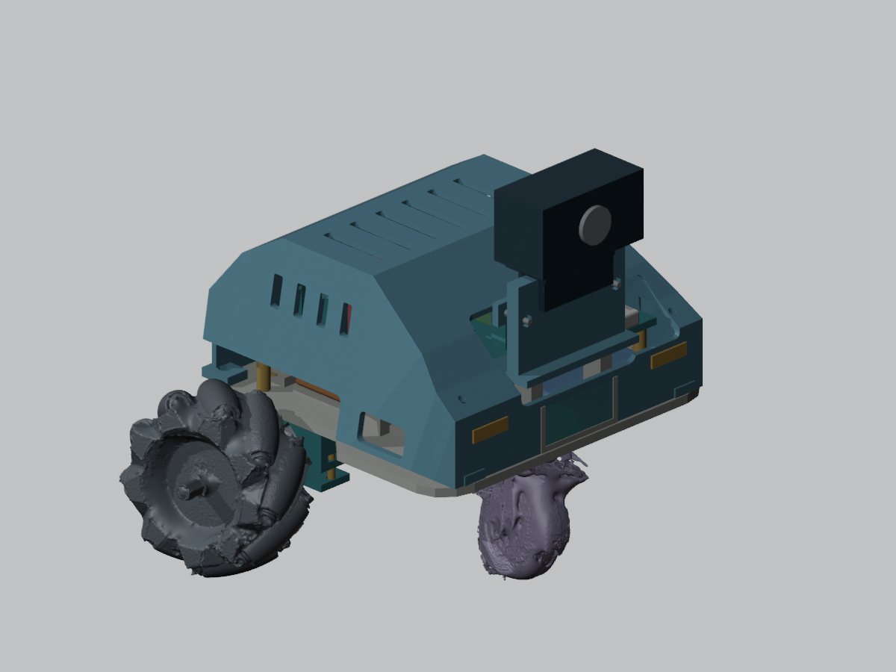

2026-10-29 / A · 기존 v4.0 보존 · 수업 STL 원본 크기 유지
검은 부분은 카메라와 기존 접이식 클립의 추정 형상입니다. 청색 세로 받침을 모니터 윗부분처럼 걸치고, 뒤쪽 청색 누름판을 지급 공용 세트의 M3×20 볼트 2개와 M3 너트 2개로 조이는 구조입니다. 테이프·접착제·새 구매 부품을 사용하지 않습니다. 제공 M6 볼트를 카메라의 확인되지 않은 나사 구멍에 넣는 방식도 사용하지 않습니다.

뒤쪽 누름판의 양 끝 볼트는 카메라 클립 바깥쪽을 지나 받침의 너트와 결합합니다. 렌더의 금속 막대는 나사산을 생략한 볼트 표시입니다.

앞 걸림턱과 뒤 접이판 사이에 세로 받침이 들어갑니다. 렌더에는 조이기 전 추정 여유 1mm가 있습니다. 조립 시 누름판을 좌우 균등하게 조여 뒤 접이판을 받침 쪽으로 잡습니다. 실제 힌지 구조가 이 움직임을 허용하는지는 확인이 필요합니다.
받침은 세로판의 넓은 면이 베드에 놓이도록 회전해 내보냈습니다. 누름판은 넓은 면을 아래로 놓으면 됩니다. 덮개는 기존 지붕 아래 방향입니다. 출력 전 슬라이서에서 너트 홈과 절개 주변의 지지대 필요 여부를 확인해야 합니다. 실제 장비 재료가 확인되지 않아 G-code는 제공하지 않았습니다.

카메라가 앞선 프리뷰보다 높아졌습니다. 이는 뒤 접이판이 선반과 닿지 않도록 확보한 추정 배치이며 실물 높이에 따라 낮출 수 있습니다.